Bando, Ibaraki: things to do, food and stays
Bando · Ibaraki
Bando
Highlighted on the Ibaraki map.

Stay
ホテルグリーンコア坂東
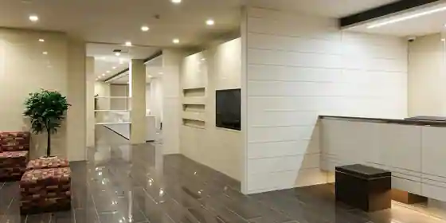
Hotel Gurinkoa Bando
Dining
論露に不二
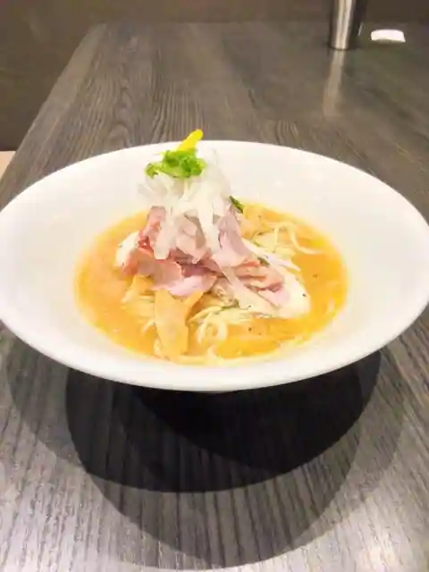
Ron Tsuyu Ni Fuji
ラーメンショップ 坂東店
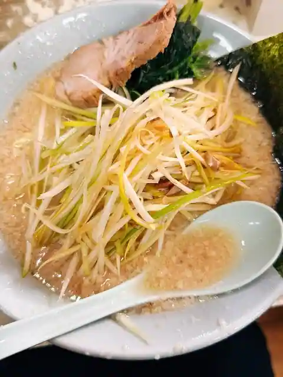
Ramen Shoppu Bando
ちゃん亭
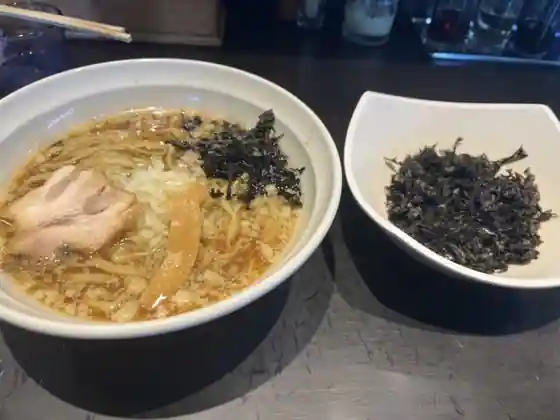
Chan Tei
こうや食堂
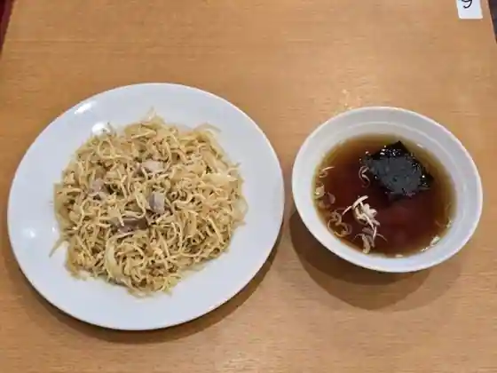
Koya Shokudo
らーめんやち
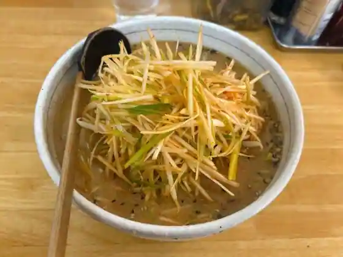
Ramen Yachi
麺や しげとみ～
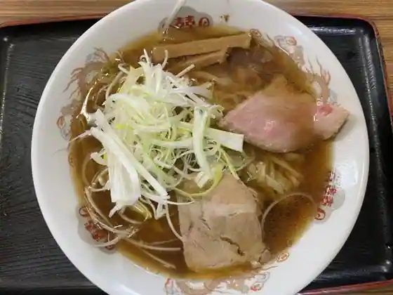
Men Ya Shigetomi ~
古菅
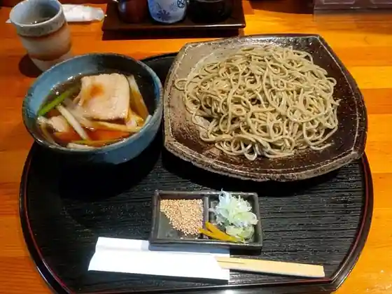
Ko Kan
コーヒー通の店 散茶廊
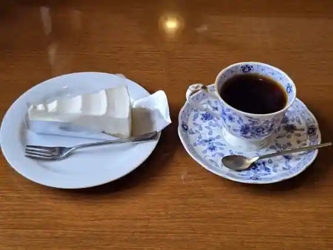
Coffee Tori No Sancha Ro
めん処 笑家
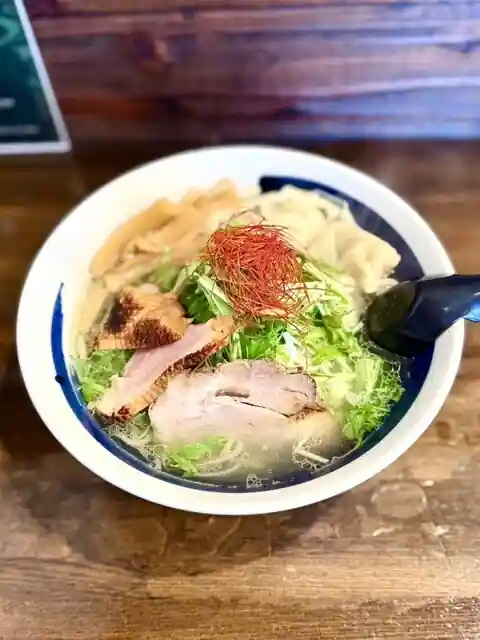
Men Tokoro Warai Ie
MezBan Restaurant
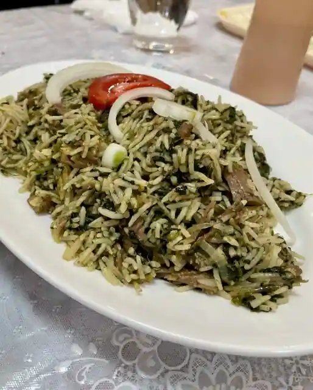
MezBan Restaurant
JAPAN HALAL MART
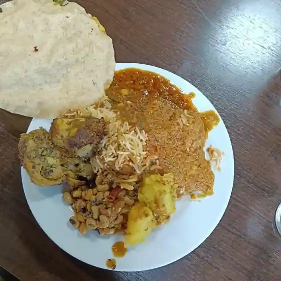
JAPAN HALAL MART
ハリオ商店
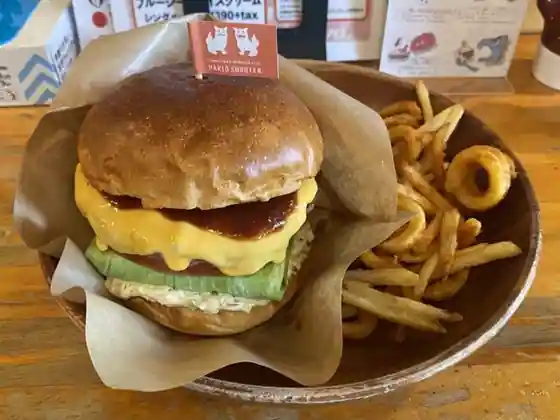
Hario Sho
パミールマート レストラン & ハラルフード 坂東店
Pamirumato Restaurant & Hararufudo Bando
将門蕎麦
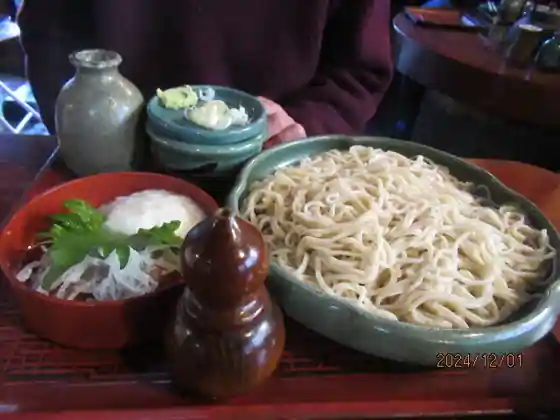
Masakado Soba
大利根カントリークラブ レストラン
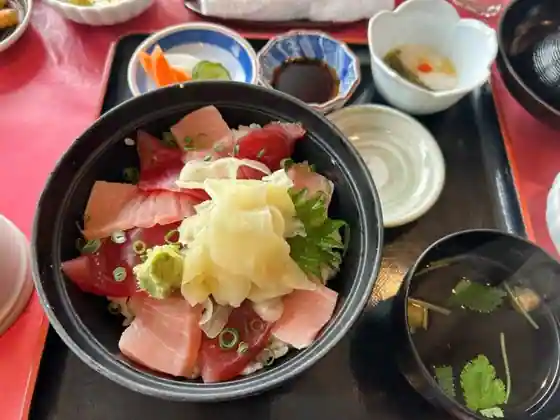
Otone Kantorikurabu Restaurant
とんかつ文久
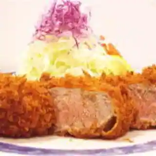
Tonkatsu Bunkyu
旬彩料理 小名浜
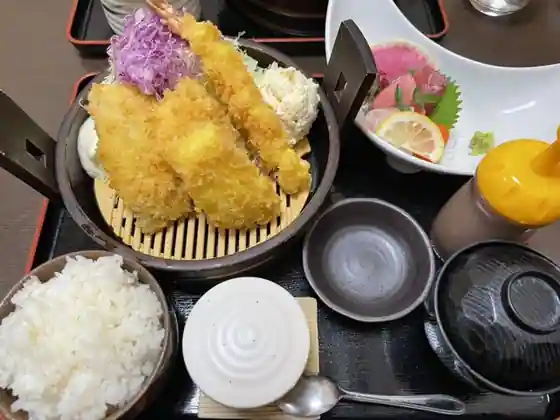
Jun Sairyo Ri Onahama
味噌のジョー 坂東店
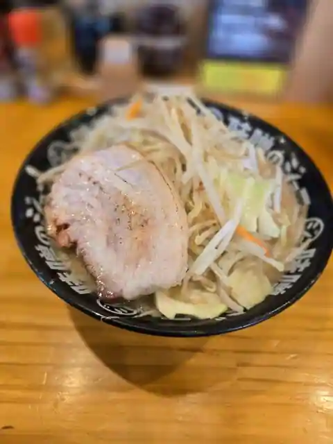
Miso No Jo Bando
穂香田園
Ho Koda Sono
魚たつ
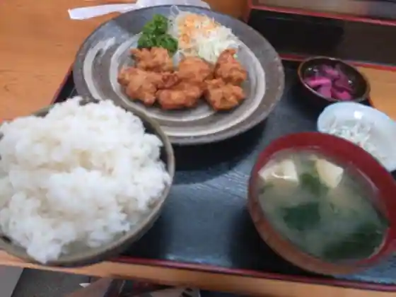
Sakana Tatsu
アヤキッチン
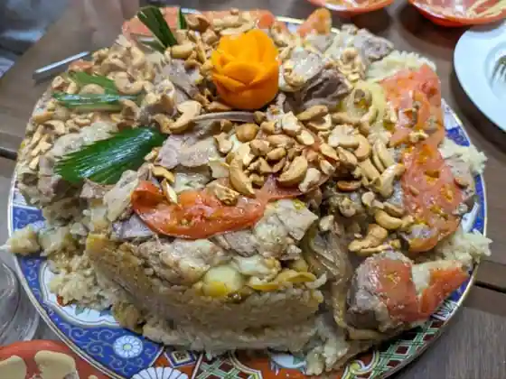
Aya Kitchen
ステーキハウス うさみ亭
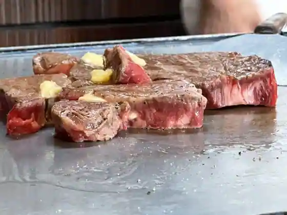
Steak House Usami Tei
一刀手打ちそば 岩井更科
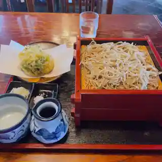
Itto Teuchi Chisoba Iwai Sarashina
ケーキサロン ハマヤ
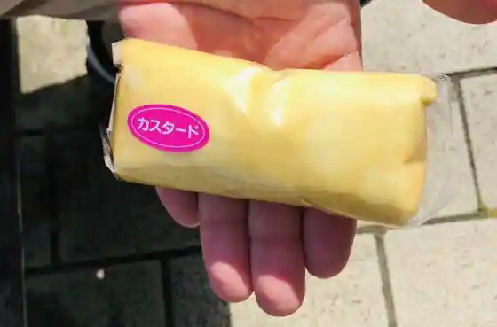
Kekisaron Hamaya
Sights
Museum Park Ibarakiken Shizen Museum
Yasaka General Park

Bando Kanko Koryu Center (Shu Midori (Shuroku))

Enmei In

Kokuo Shrine

Sakasai Castle Ruins Park
Nosambutsu Chokubai Tokoro Yahagi no Sato
Shi Tsu Roku Iori
Nosambutsu Chokubai Tokoro Megumi no Sato Sashima
Ishii no Ido
Sushi Nihonryori Ara I
Machinaka Koryu Center Yumepuraza Bando
Kanki Tera no Edohigan Sakura
Naka Village Buruberii Sono